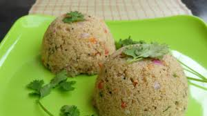

Lasagna
Home

Simple and tasty Indian breakfast made from rava.
Ingredients
- ⅓ cup finely chopped onions
- 1 teaspoon chopped green chillies
- 1 teaspoon finely chopped ginger
- 1 teaspoon chana dal (hulled and split bengal gram)
- 1 teaspoon urad dal (hulled and split black gram)
- 8 to 10 curry leaves
Instructions
- Roast rava until light color
- Heat oil
- Sautee Veggies
- Add rava
- Add water
- Mix while cooking
- Eat